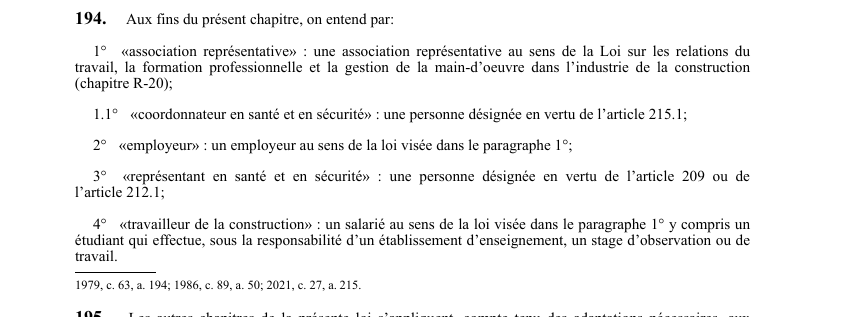

art-194-LSST : définitions du chapitre construction
Porte d'entrée du chapitre construction : 5 termes y prennent un sens particulier, valable pour ce chapitre seulement et non pour le reste de la LSST.
- Deux termes sont empruntés à la loi R-20 sur les relations du travail dans la construction : « association représentative » (par. 1°) et « employeur » (par. 2°).
- « coordonnateur en santé et en sécurité » (par. 1.1°) : la personne désignée en vertu de l'art. 215.1.
- « représentant en santé et en sécurité » (par. 3°) : la personne désignée en vertu de l'art. 209 ou de l'art. 212.1.
- « travailleur de la construction » (par. 4°) : le salarié au sens de R-20, y compris l'étudiant en stage d'observation ou de travail sous la responsabilité d'un établissement d'enseignement.
- Effet pratique : ces définitions commandent le calcul des seuils de 10, 20 et 100 travailleurs du chapitre, stagiaires compris.
Visé : toute personne · Nature : définition
🌐 LegisQuébec · 📄 PDF officiel (page 56)
Texte officiel
Aux fins du présent chapitre, on entend par:
1° «association représentative» : une association représentative au sens de la Loi sur les relations du travail, la formation professionnelle et la gestion de la main-d’oeuvre dans l’industrie de la construction (chapitre R‐20);
1.1° «coordonnateur en santé et en sécurité» : une personne désignée en vertu de l’article 215.1;
2° «employeur» : un employeur au sens de la loi visée dans le paragraphe 1°;
3° «représentant en santé et en sécurité» : une personne désignée en vertu de l’article 209 ou de l’article 212.1;
4° «travailleur de la construction» : un salarié au sens de la loi visée dans le paragraphe 1° y compris un étudiant qui effectue, sous la responsabilité d’un établissement d’enseignement, un stage d’observation ou de travail.
Texte de l’article 194 LSST, extrait de la couche texte du PDF officiel (page 56), sans OCR ni retouche. La capture ci-dessous et le PDF font foi.
{kind=link}

Toucher l'image pour l'agrandir🔗 Ouvrir a cette page : LSST.pdf : page 56 · texte a jour au 26 mars 2024
Voir aussi
- art. 192 : effet immédiat décision Commission · procédure : une décision rendue par la Commission à la suite d'une demande de révision a effet immédiatement, malgré la contestation devant le Tribunal administratif du travail.
- art. 193 : contestation devant Tribunal administratif · faculté : une personne qui se croit lésée par une décision de la Commission peut, dans les 10 jours de sa notification, la contester devant le Tribunal administratif du travail ; le recours est instruit et décidé d'urgence.
- art. 195 : application loi travailleurs construction · obligation : les autres chapitres de la présente loi s'appliquent aux employeurs et aux travailleurs de la construction, compte tenu des adaptations nécessaires, sauf dans la mesure où ils sont modifiés par le présent chapitre.
- art. 196 : obligations maître oeuvre construction · obligation : le maître d'oeuvre doit respecter, au même titre que l'employeur, les obligations imposées à l'employeur par la présente loi et les règlements, notamment prendre les mesures nécessaires pour protéger la santé et assurer la sécurité et l'intégrité physique.
- 🔧 Modifié par : LMRSST · Article modificateur de la LMRSST.
- ↑ Loi : LSST
Pages qui pointent ici (6)
- art-192-LSST : effet immédiat de la décision de révision Recueil législatif
- art-193-LSST : contestation au Tribunal administratif du travail en 10 jours Recueil législatif
- art-195-LSST : autres chapitres applicables à la construction Recueil législatif
- art-196-LSST : maître d'oeuvre assimilé à l'employeur Recueil législatif
- art-215-LMRSST : modifie l'art. 194 LSST Recueil législatif
- LMRSST : Chapitre II : Modifications à la LSST Recueil législatif